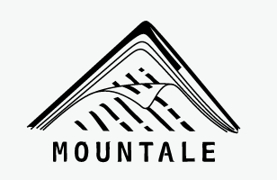

Mountale, un nouvel outil d’écriture
Édition du 5 mai 2020
Mountale est en cours de changements. Avec un peu de chance, les améliorations attendues pour un éditeur de texte seront finalement apportées. En tout cas, c’est déjà un outil pratique pour obtenir du html propre pour des articles de blog, même si on ne peut pas copier/coller ce html facilement.
Il y a déjà un petit moment que je n’ai pas écrit sur mon blog et je m’en excuse. Je suis actuellement très prise par la réécriture de mon roman Megumi - Les Monts Enchantés (qui va très probablement changer de nom).
Je reviens aujourd’hui avec un article plus technique pour vous parler d’un outil d’écriture fraîchement débarqué sur la toile : Mountale.
 Édition du 19 mai 2016 : Je refais tout mon blog au propre (hébergé sur GitHub Pages. Fini Tumblr !) et chacun de mes articles est republié grâce à Mountale (via un script Python) ! Je vous épargne les détails. Tout ce qui compte ici, c’est que Mountale a changé de tête, donc je change l’image d’aperçu aujourd’hui. Il y a toujours quelques petits bugs sur Firefox, mais l’outil est opérationnel sur Chrome et Chromium. On peut récupérer le dossier du code de programmation sur GitHub si jamais ça nous dit d’y apporter quelques modifications.Édition du 13 mars 2016 : Mountale a un petit peu changé ! Il est Opensource et propose une interface plus claire pour ne subir aucune distraction durant l’écriture ! Allez y jeter un œil.
Mountale, qu’est-ce c’est ?
Il s’agit d’un outil d’écriture gratuit utilisable sur internet à cette adresse. Le lien n’est plus valable puisque le projet a été abandonné. Proposé pour l’instant en version d’essai, il permet de mettre en forme des textes sans se prendre la tête – quelle joie ! Je l’utilise d’ailleurs depuis un certain temps pour écrire mes articles de blog. En effet, c’est l’idéal pour obtenir du HTML correct et avoir un article lisible. Avec l’outil proposé sur Tumblr, je devenais folle ^^.
Cet outil possède plusieurs avantages :
Sauvegarde des fichiers
Lorsque l’on crée un fichier, il est sauvegardé dans le cache du navigateur. À la prochaine visite, il est encore là (si vous n’avez pas vidé votre cache, bien sûr).
Un système d’écriture simple
Le formatage des textes est simple et rapide et comme je vous l’ai dit, on peut exporter les textes sur le web tout en gardant une mise en forme impeccable. Pour l’instant, il est vraiment utile pour le blog, mais de nouvelles fonctionnalités devraient voir le jour pour faciliter l’écriture de roman, de poésies, de lettres et autres textes. Vous ne pourrez plus vous en passer, c’est sûr. C’est déjà mon cas ^^.
Concrètement, comment ça marche ?
L’écriture en blocs
Pour écrire en toute tranquillité, sans penser aux retraits, aux interlignes, à la police, etc, Mountale propose d’écrire dans des blocs. Ces blocs peuvent être de différents types, comme des paragraphes, des titres, des dialogues ou encore des listes. Un marquage spécifique permet au logiciel de reconnaître le type de bloc que vous créez et ainsi de le formater correctement.
Par exemple, pour écrire un titre, il suffit de mettre un « = » (égal) devant votre titre. Pour un dialogue, un simple « - » (moins) suffit et en plus, le logiciel le change automatiquement en tiret cadratin ! Plus besoin de chercher les unicodes ou de farfouiller dans les tables de caractères spéciaux pour le trouver, niark ! Pour un paragraphe normal, c’est encore plus simple, car il n’y a rien à ajouter. Il suffit d’écrire.
Le marquage est assez simple à retenir, même si pour insérer des liens ou des images il faut regarder la documentation plus d’une fois pour se rappeler de tout.
Il existe aussi un marquage inhérent au texte afin de mettre des mots en gras ou en italique, ou encore d’insérer des notes de bas de page. C’est très pratique.
Pour la version d’essai, il n’existe qu’un style de formatage par défaut, mais apparemment, d’autres seront disponibles par la suite et on pourra même personnaliser. Ce qui veut dire que l’on pourra mettre en forme un manuscrit en un rien de temps. C’est pas génial ça ?
Une interface simple et épurée
Pour écrire un roman, j’ai besoin de me plonger vraiment dedans. Pour ça, il me faut toujours un peu de temps et je me laisse trop facilement distraire. C’est l’enfer. Avec cet outil d’écriture, j’ai l’impression d’être devant une page vierge qui n’attend qu’à être remplie – encore faut-il savoir quoi écrire ^^.
En plein écran (F11), la page d’écriture de Mountale est parfaitement lisible. Les blocs de textes se trouvent au milieu, la police est suffisamment grosse (et si on veut, on peut encore zoomer) et les boutons de navigations sur la page défilent avec le texte. Il n’y a plus qu’à écrire, sans penser à rien d’autre. Au pire, de temps en temps, il faut réfléchir un peu au marquage nécessaire pour mettre tel mot en italique ou pour insérer une image. Pour ma part, maintenant, c’est acquis et ça vient tout naturellement.
Et ensuite ?
L’outil promet quelques améliorations et de nombreuses fonctionnalités pour faciliter la mise en forme des textes. J’attends ça avec impatience. Pour l’instant, je vous conseille d’essayer et revenez me dire ce que vous en avez pensé et si vous envisagez d’écrire vos textes avec ! Moi, je me lance ;)